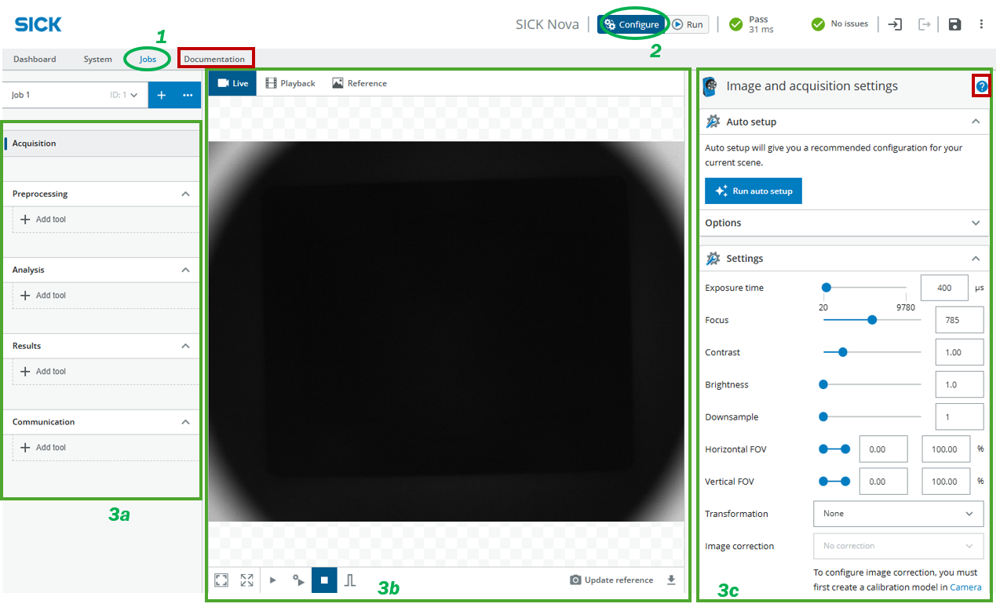
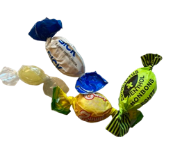
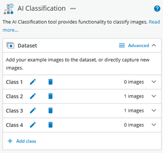
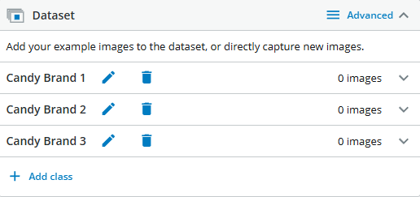
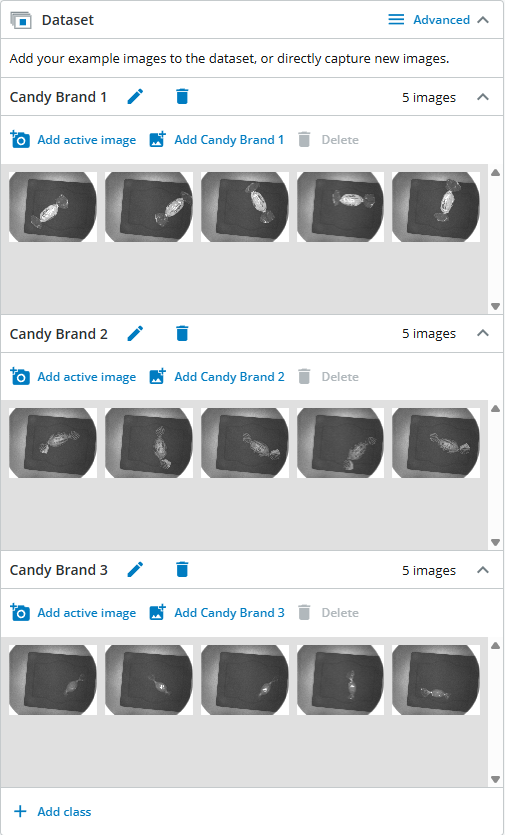

Trainer
Sample solutions
Download this PDF with sample solutions for the exercises. The PDF is password-protected with the password provided to the order e-mail-address. -to be added- Here you can download some project files: -to be added-
Exercises
Exercise 1 - Getting started
Exercise 1.1 - The user interface
Goal: This exercise is meant as an introduction to the GUI. Guide through the basics of the interface. This is a shortened guide that introduces the participants to what is important for the following exercises. If you need a deeper understanding of all the functions available, please click “Documentation” (available as of Nova 2.14) in the gray row below the SICK logo or click "?" to receive detailed info about each tool (both highlighted in red).
Connect to your sensor's IP address in the browser.

- If prompted, create an empty project, then make sure Jobs is selected. This is where you can select a job/project slot to work in.
- Set the sensor to Configure mode. This enables all the settings.
- The interface is split into three sections (from left to right):
- Processing steps/tools: These are the tool categories Nova provides. From image acquisition to how that image will be processed and analyzed to what to do with the results and how to communicate that final result to other devices. Using these sample exercises, we are mostly working in Step 1: Acquisition and Step 2: Analysis, where all the (AI) tools to analyze the acquired images are located.
- Preview windows: Set to Live and in the bottom row of the section select Free Running for a live image or leave it at Stop to trigger only when needed by clicking .
- Tool options: The content of this section changes based on what tool you have selected in Processing steps/tools. Here you can change the settings of each individual tool.
Exercise 1.2 - Image acquisition
Goal: Acquire images that are suitable for subsequent analysis steps.
Place any available object in the tray. Ignore the auto setup (it may not always deliver optimal results) and experiment with the image acquisition settings. Adjust the value sliders until you achieve a satisfactory image.
Be sure to also explore the first two Integrated Lighting options!
Do not enable record images. When this option is active, the sensor saves every captured image to its internal memory, which can quickly fill up and cause performance issues.
-
Showcase some results in a plenary session. Discuss what the settings are and what they do.
Sample Solution
- Exposure time: The exposure time of the sensor. Increase the exposure time to get a brighter image.
- Focus: The focus distance (in mm). The lower and upper limits are set based on the possible focus distances for the device.
- Contrast: The contrast level for image acquisition. Increase the contrast to make objects in the image more distinguishable.
- Brightness: The brightness (gain factor) for image acquisition. Keep the brightness low to reduce the level of noise. If a brighter image is required, it is recommended to increase the exposure time before increasing the brightness.
- Downsample: The downsample factor for the acquired images. The downsample factor is applied both vertically and horizontally. For example, a downsample factor of 2 will resize a 1000 x 1000 px image into a 500 x 500 px image. Downsampling is recommended to save disk space and to decrease the processing time for images with high resolution.
- FOV: Limit the camera's field of view width (X/Y direction). At least 20% of the total width must be used.
- Transformation: Use this setting to mirror or rotate the image
-
Some settings have trade-offs. What are they?
Sample Solution
- Exposure time: As a downside to having a brighter image, the image will take longer to take, this can cause blurry images if the object is moving.
- Brightness: As the image gets brighter, more noise is introduced into the image, causing it to lose quality and definition, especially in details.
- Downsample: Downsampling decreases the resolution and therefore small details get lost.
-
What’s the difference between Exposure time and Brightness?
Sample Solution
- A higher Exposure time increases the image brightness, but introduces motion blur (if the object or the camera is moving). This happens as the sensor is given more time to gather light (resulting in a brighter image). But since every movement happening while gathering light (e.g. taking the image) causes blurriness, a longer exposure time increases the chance of a blurry image. A static object and camera cause no issues.
- A higher Brightness value does not increase the time it takes to capture the image. The higher image brightness is achieved by increasing the sensors sensitivity, meaning that less light suffices for a brighter image. Since the sensor is set much more sensitive however, small brightness errors are amplified and therefore result in a noisier, more grainy image of a lower quality, where small details might get lost.
- It is recommended to first make the object brighter by external means, like a photo flash or more lights in the environment as there are no blur-side-effects associated with this measure. Then Exposure time should be prioritized if the movement speed allows it. Only then if the previous measures are exhausted it is recommended to increase the brightness value.
-
What is Downsampling good for? Set it to a value of 3 or 4 if possible, to ensure a smooth user experience.
Sample Solution
Downsampling decreases the image resolution which in turn decreases processing time as there are less pixels to analyze. This speeds up the processing time. A faster processing time leads to a higher frame rate, increased response times and a smoother user experience. If downsampling is set too high, important features that you want to recognize in an object might get lost, so the right setting depends on the chosen object and feature.
-
What settings would you use for your object? What should be clearly visible?
Sample Solution
The feature that is important for the image analysis must be clearly visible/distinguishable. This varies per object. For example: You want to classify coins (1 Euro/2 Euro coins). The Number or "image" on the coin determines the value and therefore the class. Since you want to make that visible, maybe a light from the side might help elevating the contrast between higher and lower object features in the object. A higher contrast might help increasing the feature visibility more. Set the focus to the right distance between camera and object and the exposure so that the features are visible (not all white, not all black).
-
Compare that to the auto setup. Which one do you think is better for the given object, your settings or the auto settings? Justify your answer.
Exercise 2 - Classification
Exercise 2.1 - My first AI Classification
Goal: Differentiate between various objects using AI Classification
Recommended objects
| info | image |
|---|---|
| For this exercise, we recommend using various types of wrapped candy or peppermints. You can substitute these with other objects that differ significantly in appearance. Advanced Option: To increase the difficulty, choose objects that look more similar. For example, use coins and classify them by value or country of origin. You may also decide whether to include the coin backsides as part of the classification. |  |
Choose 2 to 5 different objects for classification.
Then, in the left panel, navigate to Analysis → Add Tool → Classify → AI Classification.
Once selected, make sure your live image is set to stop .
Now you can resize and move the tool’s working area as needed.
In the AI Classification settings panel, you can rename , delete and add new classes.

-
Create classes as needed and name the classes accordingly.
Sample Solution
For example when using different kinds of candy:
-
Class 1: Candy brand X - 5 images
-
Class 2: Candy brand Y - 5 images
-
Class 3: Candy brand Z - 5 images

-
-
Click Free running in the bottom of the live view panel to update the image quickly.
Then in the AI Classification panel just click to add sample images for the respective classes.Tip: If the last thing you did was click on , the space bar on your keyboard will also add the image to your sample pool.
Sample Solution

Once you have collected at least 5 images per class, scroll down and click .
The process will take up to about 1 minute and a neural network will be trained with the images you collected. -
Put the objects in the tray and check the results.
-
What are your findings? How did you position the objects? What did you pay attention to?
Sample Solution
Things participants may have paid attention to: - Capturing the object in various positions - Rotating the object to capture it in various angles - Capture the image in various lighting conditions - Capture images of more than one object/candy of the same brand/class.
-
You can always add more images and retrain the AI.
Tip
When confronted with a wrong result use this very image as an example for the correct class. Can you get better results after retraining?
-
What happens if you don’t put anything in the tray? Fix the problem and discuss.
Do not exceed 100 images in total for this exercise. This is the local storage limit for images on the sensor.
Sample Solution
If you don't put anything in the tray, it will show one of the classes you created as the result. The tool must choose one of the defined classes alongside its confidence score. To fix this "wrong" result, create a new class called "empty" and add images of the empty tray. Click "Train" and check the results.
Exercise 2.2 - Something more complicated
Expand your approach: Use other objects you have available – objects that may be more difficult to classify. You don’t need to stick to one object per class. For example:
- Object variants within a class: Wrapped candies vs. empty wrappers.
- Creative options: Drawings placed under the sensor for classification. Challenge yourself to think beyond the obvious!
- Come up with an object that might be more challenging to classify correctly.
- Collect images, start the training and test out the results. Check the tool help “?” to get more information about the training settings and try to improve your results
- Discuss with other groups what your findings are. What were you trying to classify? Do you need more images to train? If you are doing quality control, do you really need all these classes? Could another tool be more helpful in your scenario?
Tip